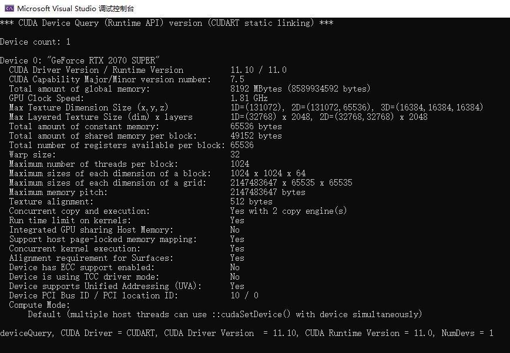

编译OpenCV4.5.1和Contrib库
生成OpenCV编译工程
OpenCV是一个开源的计算机视觉库，集成了很多常用的计算机视觉算法，另外一些需要版权的算法则放到Contrib库里，这里基于VS2019编译CUDA版的OpenCV。
工具与代码准备
编译OpenCV需要使用CMake生成VS工程，然后在VS中编译。Eigen是一个矩阵运算库，可有可无，这里还需要安装CUDA和CUDNN，这样就可以让OpenCV使用GPU了。
- 工具
- VS2019
- CMake
- CUDA和CUDNN
- 源码
OpenCV可以使用CUDA加速，这里需要安装CUDA和CUDNN，另外编译Contrib的时候CMake需要下载一些文件，相应的文件都在3rdparty的分支上可以找到，如果CMake下载的话需要科学上网，没有科学上网的可以修改hosts或者自己去下载
// CMake会从这里下载一些OpenCV需要的文件
"https://raw.githubusercontent.com/opencv/opencv_3rdparty" 将 raw.githubusercontent.com 解析出来的ip加入hosts就不会下载失败
CUDA配置
由于要使用CUDA，而显卡架构太多，最好是根据自己的的显卡设置，这样可以提前生成一些需要的代码，加快CUDA初始化的速度。这里的显卡是2070s，以下是需要根据平台设置的两项
CUDA_ARCH_BIN设置7.5，Nvidia网站有，20系算力都是7.5CUDA_GENERATION选Turing，2070s是图灵架构，最新的30系是安培架构
CMake设置
OPENCV_EXTRA_MODULES_PATH选择Contrib的路径，然后重新ConfigureWITH_EIGEN勾上，Eigen的配置可以参考Eigen库加入工程编译- 如果是Intel的CPU，可以把MKL相关的勾上，这是Intel为自家CPU专门开发的数学运算库，AMD也能用
- OpenMP可选
- OpenCV设置
- java和python相关的去掉，只需要c++，带test是测试都去掉
WITH_CUDA和OPENCV_DNN_CUDA勾上BUILD_opencv_world勾上，最终会链接成一个库
Configure以后可以看一下有没有红色的，应该没有红色的，最终再Configure一次，然后Generate和Open Project
使用MSVC编译
Open Project后，将Install设置为启动项目，然后Debug和Release分别生成一下，最终生产成的动态库和头文件都在install文件夹中，直接使用它就行，整个编译过程大概需要几十分钟
测试OpenCV动态库
VS所使用的动态链接库，主要有三部分，头文件、.lib导入库和 .dll动态链接库，其中VS只需要头文件和导入库就可以编译，最终运行的时候才需要加载动态链接库去执行调用的方法。
动态库配置
- install中的x64\vc16\bin的路径加入系统Path
- VS2019生成一个空的C++项目
- 项目属性[所有配置、x64]，VC++目录，加入install中头文件，库目录加入install中lib文件夹
- 链接器->输入->附加依赖项[Debug和Release分开配置]
- Debug 写入opencv_img_hash451d.lib opencv_world451d.lib
- Release 写入opencv_img_hash451.lib opencv_world451.lib
测试动态库
打印出详细的GPU详细，然后使用GPU对图片进行边缘检测
#include<opencv.hpp>
#include<cudaimgproc.hpp>
using namespace cv;
int main() {
Mat img = imread("./1.jpg");
int device = cuda::getDevice();
cuda::printCudaDeviceInfo(device);
cuda::setDevice(device);
cuda::GpuMat gpuImg;
gpuImg.upload(img);
cuda::cvtColor(gpuImg, gpuImg, COLOR_RGB2GRAY);
Ptr<cuda::CannyEdgeDetector> p = cuda::createCannyEdgeDetector(150, 30);
p->detect(gpuImg, gpuImg);
gpuImg.download(img);
imshow("Edge", img);
waitKey(0);
return 0;
} GPU信息打出

边缘检测成功
生成模板工程
去掉代码文件，项目->导出模板，以后的项目都可以用这个模板生成了，不用每次都去配置